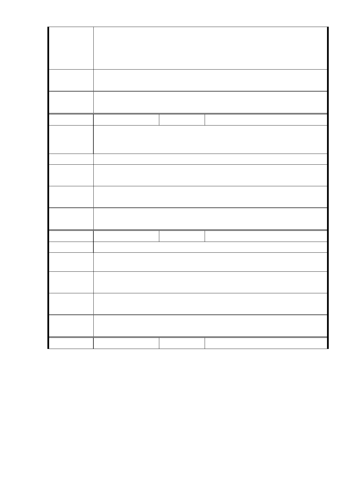

意 見 容。
2.本案業於林口街80巷規劃22公尺寬帶狀式開放空間以供地區
居民使用，另拓寬道路涉及地區路型整體規劃，不宜僅變更特
定路段。
專案小組
審查結論
同編號 1。
委
決
員
會
議
同編號 1。
編號
62
陳情人 駱○麟
中坡里民全力支持開發，有連署書
陳 情 理 由 1. 建議遊覽車停在地下停車場。
2. 中坡里大道路變更商業用地連署書。
建 議 辦 法 請少數服從多數。
市 府 回 應 1.設置大客車停車位部分，同編號28回復內容。
意見
專案小組
審查結論
同編號 1。
委
決
員
會
議
同編號 1。
編號
63
陳情人 刁○爃
陳 情 理 由 中坡里民全力支持開發案，愈高愈多愈速，愈符里民願望。
建議辦法
1.
2.
建築物盡量向東南方發展。
公園向西北移遷（原平宅改為公園）
市 府 回 應 1. 有關調整分區規劃部分，同編號1回復內容。
意見
專案小組
審查結論
同編號 1。
委
決
員
會
議
同編號 1。
編號
64
陳情人 孫○灝
- 83 -